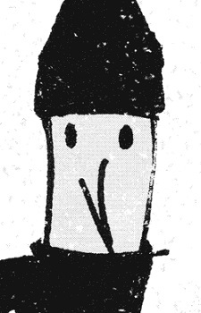

Punpun Onodera is a normal 11-year-old boy living in Japan. Hopelessly idealistic and romantic, Punpun begins to see his life take a subtle—though nonetheless startling—turn to the adult when he meets the new girl in his class, Aiko Tanaka. It is then that the quiet boy learns just how fickle maintaining a relationship can be, and the surmounting difficulties of transitioning from a naïve boyhood to a convoluted adulthood. When his father assaults his mother one night, Punpun realizes another thing: those whom he looked up to were not as impressive as he once thought.
As his problems increase, Punpun's once shy demeanor turns into voluntary reclusiveness. Rather than curing him of his problems and conflicting emotions, this merely intensifies them, sending him down the dark path of maturity in this grim coming-of-age saga.
Source: MAL
favourite
add to list
score
8.49
ranking
#71
type manga
volumes 13
chapters 144
status finished
start date mar 15, 2007
end date nov 2, 2013
premiered spring 2011
publisher Shogakukan
members 21.629
favorites 482
ranked #29
popularity #11

Oyasumi Punpun
Characters
view all
Onodera, Punpun
main character
Tanaka, Aiko
main character

Nanjou, Sachi
supporting
Ookuma, Midori
supporting
Punyama, Father
supporting
Onodera, Yuuichi
supporting
Staff
view allAsano, Inio
creator
Kashiwaba, Hiro
assistant
Desbief, Thibaud
french translator